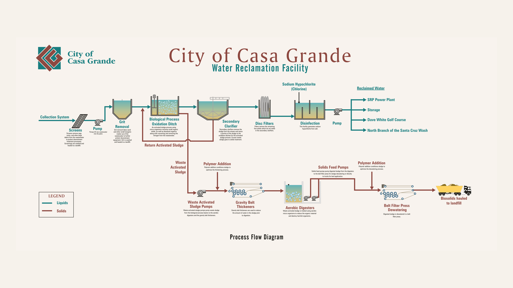

Protecting Public Health. Conserving Water. Supporting Our Community.
Our Water Reclamation Facility uses science, advanced technology and skilled operators to safely treat wastewater and produce a valuable reclaimed-water resource.
Loading forecast...
Did You Know?
Wastewater treatment protects public health and helps preserve Arizona's water resources.

From Collection to ReuseWater Reclamation Facility Process Flow
Wastewater by the numbers
Essential infrastructure. Every day.
Treatment, collection, reuse and recharge work together to protect public health and support a growing community.
18 MGD
Water Reclamation Facility treatment capacity
2.1 BG
Wastewater treated in 2025
400 MG
Effluent reused by the municipal golf course and SRP in 2025
400+ MI
Sanitary sewer collection system
Biological Treatment
Where microorganisms do the heavy lifting.
The activated-sludge process removes organic material and helps convert and remove nitrogen before secondary clarification.
How wastewater is treated
Three complementary treatment methods
⚙️
Physical
Screens, pumps and grit removal physically separate large debris, sand and other material to protect downstream equipment.
🦠
Biological
Naturally occurring microorganisms break down organic material and support nitrogen removal in the activated-sludge process.
💧
Chemical
Chemical treatment supports disinfection and final water-quality requirements before reclaimed water is reused or discharged.
Water Reuse & Recharge
Giving water another purpose.
Reclaimed water supports reuse opportunities, while the managed recharge system stores water in the groundwater basin for long-term storage credits.
Energy at the WRF
Solar power supporting wastewater operations.
1.68 MWSolar project
~$30K/mo.Approximate reduction in power cost observed
A Growing Community
Infrastructure built to serve Casa Grande.
Wastewater treatment, collections, water reuse, energy and long-term planning are all part of keeping essential services reliable.